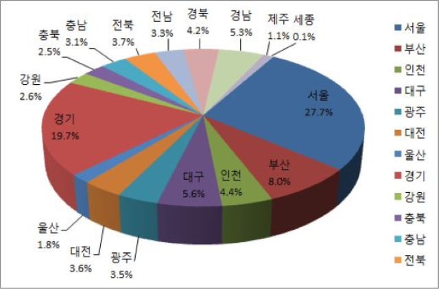

Necessity
의료의 접근성 및 의사 인력의 활용성 충족

AI 의료 키오스크
인구 고령화, 질병의 증가 등으로 의료 수요가 급증할 것으로 전망하고 있고
의료인력의 부족 문제가 심화되어 2030년에는 의사가 7646명이 부족할 것으로 전망하고 있다.
# OECD 국가 중 1000명당 임상 의사 수: 2.3명(OECD 국가 평균(3.3명))
# 외래 진료 건수: 17회 입원이 아닌 진료의 목적으로 병원을 방문하는 횟수가 OECD 국가의 평균(7.4회)보다 2.3배로 1위를 기록
대한민국은 경제 수준과 소득 수준의 향상,
의료 서비스의 질적 수준에 대한 국민의 요구가 증가하고 있어
의사 인력의 공급 정책 방향을 중장기적으로 OECD 국가들의 평균만큼으로 유지하는 것이 필요하다
접근성 제한으로 인해 결국 지역 간 건강상태 차이
보건의료의 자원 및 지역 간 균형을 이루는 것이 의료의 접근성 및 의사 인력의 활용성 측면에서 한정된 자원으로 국민의 요구를 효율적으로 충족시킬 수 있는 방안이다.
 전문의 자격의과 대학 및 의과 전문대 학원을 졸업한 경우 자격 취득
전문의 자격의과 대학 및 의과 전문대 학원을 졸업한 경우 자격 취득 인기 전공 과목 편향인기 전공 과목:
인기 전공 과목 편향인기 전공 과목: 지방 의료 인력 부족수도권: 44.8%
지방 의료 인력 부족수도권: 44.8%